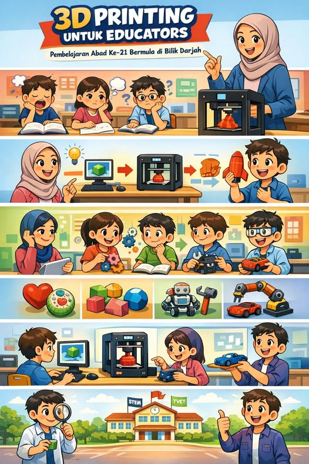
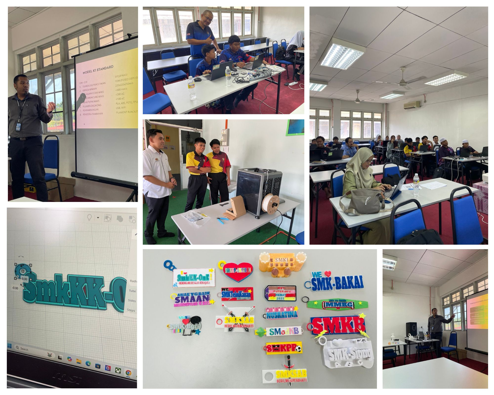
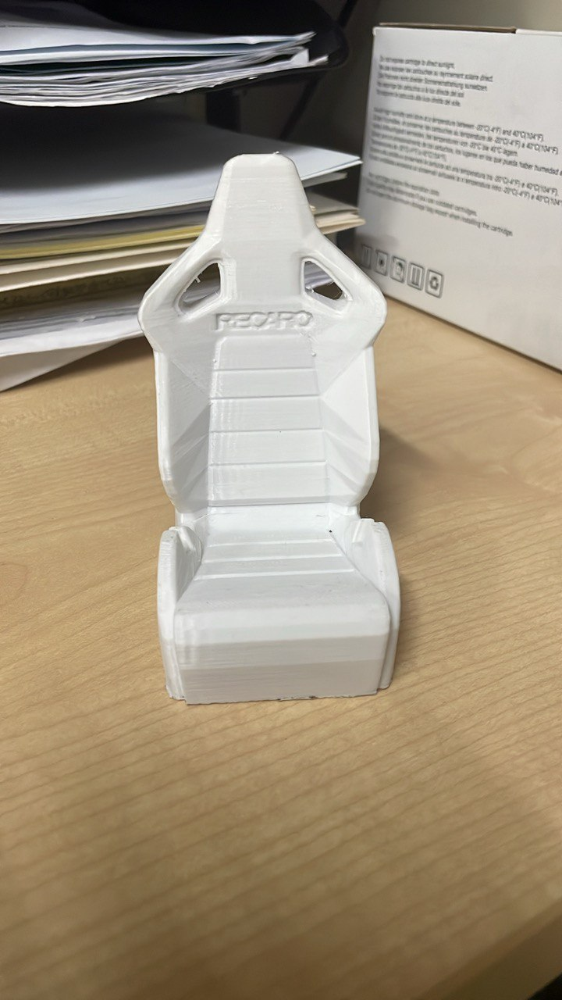
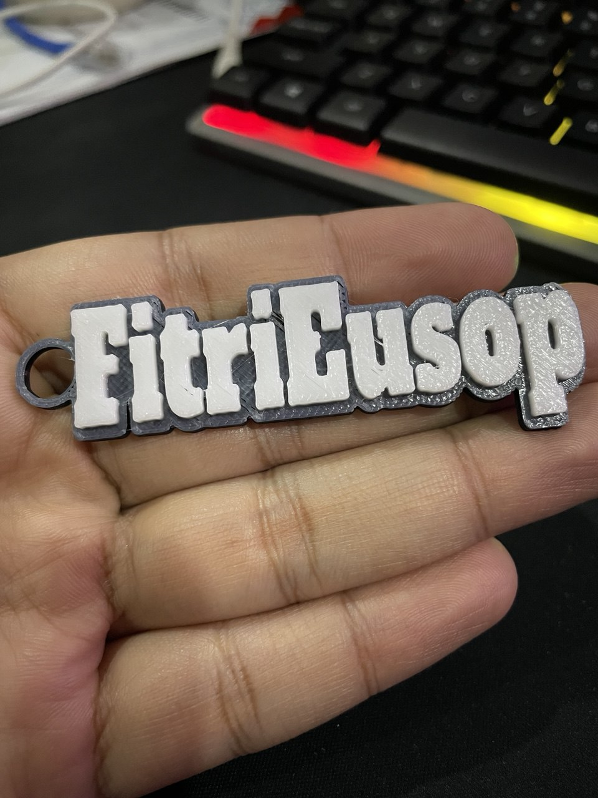

Pengenalan Filament 3D Printer
Filament ialah bahan utama yang digunakan oleh pencetak 3D untuk menghasilkan objek. Filament dicairkan di dalam nozzle dan dibentuk lapisan demi lapisan sehingga menjadi model tiga dimensi.
Setiap jenis filament mempunyai ciri fizikal, suhu cetakan dan tahap keselamatan yang berbeza. Oleh itu, pemilihan filament yang betul amat penting terutamanya dalam persekitaran sekolah.
🧵 Jenis Filament Utama
- PLA – Paling sesuai untuk sekolah, mudah dicetak dan selamat
- ABS – Lebih kuat tetapi berbau dan memerlukan pengudaraan baik
- PETG – Kuat, sedikit fleksibel dan kurang bau berbanding ABS
- TPU – Fleksibel dan lembut, sesuai untuk objek boleh lentur
🏫 Cadangan untuk Sekolah
Filament PLA adalah pilihan terbaik untuk kegunaan PdP kerana ia mudah dikendalikan, tidak berbau kuat dan lebih selamat untuk murid.
Untuk projek khas seperti objek fleksibel atau tahan air, guru boleh memperkenalkan filament lain seperti TPU atau PETG dengan pemantauan yang sesuai.
🤖 Apa Itu Chatbot?
Chatbot ialah sistem pintar yang boleh berinteraksi dengan pengguna melalui teks atau suara secara automatik. Dalam konteks pendidikan, chatbot membantu murid dan guru mendapatkan maklumat dengan lebih cepat dan mudah.
🎯 Kegunaan Chatbot Dalam Pendidikan
- Membantu murid mendapatkan jawapan segera
- Memberi panduan pembelajaran kendiri
- Menyokong pembelajaran digital & AI
- Mengurangkan beban tugas guru
📺 Video Penerangan Chatbot
Video: Pengenalan Chatbot & Kegunaannya
Klik ikon chatbot di sebelah kanan bawah untuk bertanya tentang 3D Printer, filament dan keselamatan.
Keluarga PLA
PLA (Polylactic Acid) ialah filament paling popular dan paling sesuai untuk kegunaan sekolah kerana mudah dicetak dan selamat.
🧵 Jenis-jenis PLA
- PLA Standard – mudah, sesuai untuk pemula
- Silk PLA – berkilat, sesuai pameran
- Matte PLA – kemasan kusam, nampak premium
- PLA+ – lebih kuat dari PLA biasa
- Eco / Easy PLA – mudah cetak & jimat tenaga
⚙️ Tetapan Asas PLA
- Nozzle: 190°C – 220°C
- Bed: 50°C – 60°C
- Cooling Fan: ON
- Nozzle Size: 0.4mm
Silk PLA (Filament Berkilau)
Silk PLA ialah variasi daripada PLA yang direka untuk menghasilkan permukaan cetakan yang berkilau seperti sutera. Ia sangat sesuai untuk produk hiasan dan model pameran.
✨ Ciri Utama Silk PLA
- Permukaan berkilau dan licin
- Warna kelihatan lebih menarik & premium
- Sesuai untuk model hiasan dan hadiah
✅ Kelebihan
- Hasil cetakan cantik tanpa perlu cat
- Warna gradient & metalik lebih menyerlah
- Mudah dicetak seperti PLA biasa
⚠️ Kekurangan
- Lebih rapuh berbanding PLA standard
- Tidak sesuai untuk cetakan laju
- Nozzle lebih mudah tersumbat jika tetapan salah
🛠️ Tetapan Cetakan Disyorkan
- Nozzle: 200°C – 230°C
- Kelajuan cetakan: 20 – 40 mm/s
- Cooling Fan: ON
- Saiz Nozzle: ≥ 0.4 mm
🏫 Kesesuaian di Sekolah
Silk PLA sesuai digunakan di sekolah untuk:
- Projek pameran STEM
- Hasil kerja murid (trofi, keychain, hiasan)
- Aktiviti kreativiti dan inovasi
Nota: Disarankan digunakan di bawah pemantauan guru dan elakkan cetakan terlalu laju bagi memastikan hasil terbaik.
Matte PLA (Permukaan Kusam / Profesional)
Matte PLA ialah filament PLA yang direka untuk menghasilkan permukaan cetakan yang kusam dan tidak berkilau. Ia memberikan rupa lebih profesional dan mengurangkan kesan lapisan (layer lines).
🎯 Ciri Utama Matte PLA
- Permukaan kusam (anti-kilat)
- Layer lines kurang kelihatan
- Penampilan kemas & profesional
✅ Kelebihan
- Sangat sesuai untuk model pendidikan & prototaip
- Tidak memantulkan cahaya (mudah dilihat dalam kelas)
- Mudah dicetak seperti PLA biasa
⚠️ Kekurangan
- Kurang berkilau (tidak sesuai untuk hiasan mewah)
- Biasanya sedikit lebih rapuh berbanding PLA standard
- Warna kelihatan lebih lembut / pudar
🛠️ Tetapan Cetakan Disyorkan
- Nozzle: 190°C – 215°C
- Kelajuan cetakan: 30 – 60 mm/s
- Cooling Fan: ON
- Infill: 15% – 20% (cukup untuk PdP)
🏫 Kesesuaian di Sekolah
- Model pembelajaran STEM & RBT
- Prototaip reka bentuk murid
- Model struktur (bangunan, komponen, bentuk geometri)
Cadangan: Matte PLA sangat sesuai digunakan sebagai filament utama PdP kerana kemasan kemas dan mudah difahami murid.
TPU (Filament Fleksibel)
TPU ialah filament 3D yang bersifat fleksibel, lembut dan kenyal seperti getah. Ia sesuai untuk menghasilkan objek yang perlu dibengkokkan atau ditekan tanpa patah.
🎯 Ciri Utama TPU
- Boleh dilentur dan ditekan
- Tahan hentakan dan tidak mudah retak
- Permukaan sedikit lembut & bergetah
✅ Kelebihan
- Sesuai untuk objek fleksibel
- Tahan lasak dan tahan hentakan
- Tidak mudah pecah berbanding PLA
⚠️ Kekurangan
- Lebih sukar dicetak berbanding PLA
- Perlu kelajuan cetakan perlahan
- Tidak sesuai untuk semua jenis pencetak
🛠️ Tetapan Cetakan Disyorkan
- Nozzle: 210°C – 230°C
- Kelajuan cetakan: 20 – 30 mm/s (perlahan)
- Retraction: Rendah atau OFF
- Cooling Fan: Sederhana
📦 Contoh Kegunaan
- Sarung telefon (phone case)
- Tapak getah / anti-gelincir
- Gelang, penutup, klip fleksibel
🏫 Kesesuaian di Sekolah
- Sesuai untuk demonstrasi lanjutan
- Tidak digalakkan untuk murid beginner
- Perlu bimbingan guru semasa mencetak
Cadangan: Gunakan TPU hanya selepas murid mahir menggunakan PLA, sebagai pendedahan kepada bahan industri sebenar.
PETG (Filament Kuat & Tahan Air)
PETG ialah filament yang kuat, tahan lasak dan lebih fleksibel sedikit berbanding PLA. Ia sesuai untuk objek yang digunakan dalam persekitaran lembap atau luar bilik darjah.
🎯 Ciri Utama PETG
- Kuat dan tahan hentakan
- Tahan air dan kelembapan
- Kurang berbau berbanding ABS
- Sedikit fleksibel (tidak rapuh)
✅ Kelebihan
- Sesuai untuk objek kegunaan harian
- Tahan haba lebih baik daripada PLA
- Kurang warp berbanding ABS
⚠️ Kekurangan
- Permukaan mudah melekit (stringing)
- Tidak sekeras PLA untuk detail halus
- Perlu tetapan cetakan lebih teliti
🛠️ Tetapan Cetakan Disyorkan
- Nozzle: 220°C – 245°C
- Bed: 70°C – 85°C
- Kelajuan: 40 – 60 mm/s
- Cooling Fan: Rendah – sederhana
📦 Contoh Kegunaan
- Bekas alatan & storan
- Pas bunga / bekas air
- Komponen luar bilik darjah
- Produk tahan lasak
🏫 Kesesuaian di Sekolah
- Sesuai untuk murid tahap pertengahan
- Digunakan selepas murid mahir PLA
- Perlu bimbingan guru semasa tetapan slicer
Cadangan: PETG sangat sesuai untuk projek RBT dan STEM yang memerlukan objek tahan lama dan praktikal.
ABS (Filament Industri & Tahan Haba)
ABS ialah filament yang kuat, tahan haba dan hentakan. Ia sering digunakan dalam industri dan produk yang memerlukan ketahanan tinggi.
🎯 Ciri Utama ABS
- Sangat kuat dan tahan hentakan
- Tahan suhu tinggi
- Boleh dirawat dengan acetone (kemasan licin)
- Digunakan secara meluas dalam industri
✅ Kelebihan
- Tahan haba lebih baik daripada PLA & PETG
- Kurang rapuh
- Sesuai untuk komponen mekanikal
⚠️ Kekurangan
- Menghasilkan bau semasa cetakan
- Mudah melengkung (warping)
- Memerlukan mesin tertutup (enclosure)
🛠️ Tetapan Cetakan Disyorkan
- Nozzle: 220°C – 260°C
- Bed: 90°C – 110°C
- Kelajuan: 40 – 60 mm/s
- Cooling Fan: Rendah / Tutup
- Enclosure: Sangat disyorkan
📦 Contoh Kegunaan
- Komponen mesin
- Bahagian mekanikal
- Produk industri
- Alat tahan haba
🏫 Kesesuaian di Sekolah
- Tidak disyorkan untuk murid tanpa pengawasan
- Sesuai untuk demonstrasi guru
- Perlu pengudaraan yang baik
Nota Keselamatan: ABS hanya sesuai digunakan oleh guru atau murid lanjutan dengan pemantauan rapi serta mesin yang mempunyai penutup.
Keselamatan Penggunaan 3D Printer
Keselamatan merupakan aspek paling penting semasa menggunakan mesin pencetak 3D. Pengguna perlu mematuhi peraturan dan langkah keselamatan bagi mengelakkan kecederaan dan kerosakan peralatan.
⚠️ Peraturan Keselamatan Asas
- Jangan sentuh nozzle atau hotbed semasa mesin sedang beroperasi
- Gunakan pencetak 3D di bawah pengawasan guru
- Pastikan kawasan cetakan bersih dan kemas
- Matikan mesin selepas selesai digunakan
🧤 Peralatan Perlindungan
- Sarung tangan (jika perlu mengendalikan objek panas)
- Cermin mata keselamatan
- Gunakan alat pencungkil (scraper) dengan berhati-hati
🚫 Larangan
- Dilarang bermain atau bergurau di sekitar mesin
- Dilarang membuka penutup mesin tanpa kebenaran
- Dilarang menukar tetapan mesin tanpa bimbingan
🧯 Tindakan Kecemasan
- Tekan butang kecemasan atau matikan suis utama jika berlaku masalah
- Laporkan segera kepada guru jika terdapat bau terbakar
- Jangan cuba membaiki mesin sendiri
Infografik Filament & Tahap Keselamatan
Infografik ini menunjukkan tahap keselamatan setiap jenis filament yang digunakan di sekolah.
🧵 PLA
Tahap: Pemula
- ✔️ Selamat untuk sekolah
- ✔️ Tidak berbau
- ✔️ Mudah dikendalikan
Digalakkan untuk PdP
✨ Silk / Matte PLA
Tahap: Pemula
- ✔️ Estetika tinggi
- ✔️ Mudah dicetak
- ✔️ Sesuai pameran
Projek kreatif
🧽 TPU
Tahap: Pertengahan
- ⚠️ Fleksibel
- ⚠️ Perlukan tetapan khas
Dengan bimbingan guru
💧 PETG
Tahap: Pertengahan
- ⚠️ Lebih kuat dari PLA
- ✔️ Tahan air
Projek aplikasi sebenar
🔥 ABS
Tahap: Lanjutan
- ❌ Berbau
- ❌ Suhu tinggi
- ❌ Perlu enclosure
Guru sahaja
📋 Jadual Keselamatan Makmal 3D
Jadual ini boleh dicetak bersaiz A4 dan dipamerkan di dalam makmal 3D Printer sebagai rujukan keselamatan.
| Perkara | Status | Catatan |
|---|---|---|
| Pengawasan Guru | ✔️ | Sepanjang operasi |
| Cermin Mata Keselamatan | ✔️ | Semasa keluarkan objek |
| Sentuh Nozzle / Hotbed | ❌ | Dilarang |
| Filament PLA Sahaja | ✔️ | Untuk murid |
| Matikan Mesin Selepas Cetak | ✔️ | Wajib |
Cadangan: Cetak, laminate dan tampal berhampiran mesin.
🖼️ Poster Keselamatan Makmal 3D
Poster ini sesuai dipamerkan di dinding makmal bagi mengingatkan murid tentang peraturan asas penggunaan pencetak 3D.
⚠️ PERATURAN MAKMAL 3D
- 👀 Sentiasa di bawah pengawasan guru
- 🔥 Jangan sentuh nozzle atau hotbed panas
- 🧤 Gunakan peralatan dengan betul
- 🧹 Pastikan kawasan kerja bersih
- 🔌 Matikan mesin selepas digunakan
- 🧵 Gunakan filament PLA sahaja (murid)
Cadangan: Cetak A3 dan tampal di makmal.
✅ Checklist Sebelum Cetakan 3D
Murid WAJIB melengkapkan semua checklist sebelum memulakan cetakan 3D.
❌ Checklist belum lengkap
📘 Rekod Penggunaan 3D Printer (PdP)
Bahagian ini WAJIB diisi sebelum cetakan dibuat. Rekod ini boleh digunakan sebagai bukti PdP dan dokumentasi sekolah.
📊 Log Rekod PdP
| Tarikh | Guru | Murid | Kelas | Filament | Tujuan |
|---|
Portal 3D Printer Pendidikan
Platform Rujukan Teknologi Percetakan 3D untuk Guru & Pelajar Sekolah
Objektif Portal
Pendedahan Awal
Teknologi 3D
Rujukan Mesra
Guru & Murid
Galakkan Kreativiti &
Inovasi
Sokong Pembelajaran
Projek
Sesuai Untuk
Apa Itu 3D Printer?
3D Printer ialah mesin yang mencetak objek tiga dimensi berdasarkan model digital menggunakan bahan seperti PLA dan ABS.
Sejarah Teknologi 3D Printing
Era Permulaan
Teknologi 3D Printing bermula dengan kaedah Stereolithography (SLA) yang menggunakan cahaya UV dan resin cecair.
Penciptaan FDM
Teknologi Fused Deposition Modeling (FDM) dicipta dan menjadi asas pencetak 3D berfilamen yang digunakan di sekolah.
Zaman Industri
Pencetak 3D sangat mahal, besar dan hanya digunakan oleh industri automotif dan aeroangkasa.
Revolusi RepRap
Projek RepRap menjadikan reka bentuk mesin open-source dan menurunkan kos pencetak 3D secara drastik.
Untuk Semua
Digunakan dalam pendidikan, perubatan, fesyen dan pembinaan rumah menggunakan teknologi 3D.
3D Printing Dalam Pendidikan

Penggunaan teknologi 3D Printing dalam pendidikan menyokong pelaksanaan PdP berasaskan STEM dan Pembelajaran Abad Ke-21. Murid dapat membina model fizikal bagi memahami konsep abstrak dengan lebih berkesan.
- Meningkatkan kefahaman konsep
- Menyokong pembelajaran berasaskan projek (PBL)
- Menggalakkan kreativiti dan inovasi
- Selari dengan transformasi digital pendidikan

Bengkel 3D

Holder Telefon

Keychain
Tutorial Bertulis: Proses Asas Percetakan 3D
Bahagian ini menerangkan langkah demi langkah proses asas penggunaan pencetak 3D, bermula daripada mendapatkan model sehingga proses mencetak objek menggunakan mesin 3D Printer.
Fasa 1: Mendapatkan Model 3D
Terdapat dua kaedah utama untuk mendapatkan model 3D yang ingin dicetak:
Kaedah A: Muat Turun (Download)
- Sesuai untuk pemula dan murid yang baru berkenalan dengan teknologi 3D Printer
- Menggunakan fail reka bentuk yang telah dikongsi oleh komuniti global
- Laman web popular: Thingiverse, Printables, Thangs dan MakerWorld
- Kelebihan: Cepat, mudah dan menjimatkan masa
Kaedah B: Mereka Bentuk Sendiri (Design / CAD)
- Sesuai untuk murid RBT, STEM dan projek inovasi
- Murid menghasilkan reka bentuk berdasarkan idea sendiri
- Perisian yang disyorkan:
- Tinkercad – mesra pengguna, percuma dan sesuai untuk sekolah (tersedia dalam DELIMa)
- Fusion 360 / Onshape – untuk reka bentuk kejuruteraan yang lebih kompleks
Fasa 2: Menukar Format Fail (Eksport ke STL)
Pencetak 3D tidak dapat membaca fail reka bentuk secara langsung. Oleh itu, fail tersebut perlu ditukar kepada format khas.
- Format STL (.stl) ialah format standard bagi percetakan 3D
- Fail STL memecahkan bentuk objek kepada ribuan segitiga kecil (triangles)
- Tindakan: Klik butang Export dan pilih format STL dalam perisian reka bentuk
Fasa 3: Proses Slicing (Langkah Paling Penting)
Proses slicing ialah langkah di mana arahan teknikal disediakan untuk mesin 3D Printer menggunakan perisian khas yang dikenali sebagai Slicer.
Perisian slicer popular: Ultimaker Cura (percuma), Bambu Studio dan Creality Print.
Tiga Tetapan Asas yang Perlu Difahami Murid
-
Infill (Kepadatan)
Menentukan kepadatan bahagian dalam objek. Nilai 15% – 20% sudah mencukupi untuk kebanyakan cetakan dan menjimatkan bahan. -
Support (Sokongan)
Digunakan jika objek mempunyai bahagian tergantung. Sokongan sementara akan dibina dan dibuang selepas cetakan siap. -
Layer Height (Kualiti)
Ketebalan setiap lapisan cetakan.- 0.2mm – Standard (cepat dan kualiti sederhana)
- 0.12mm – Halus (perlahan tetapi hasil lebih cantik)
Fasa 4: Menghasilkan Fail G-Code
Setelah semua tetapan selesai, klik butang Slice. Perisian slicer akan menjana fail khas untuk mesin 3D Printer.
- Fail yang dihasilkan dikenali sebagai G-Code (.gcode)
- G-Code mengandungi arahan pergerakan, suhu dan kelajuan mesin
- Simpan fail ke dalam Kad SD atau USB Drive
- Masukkan media simpanan ke dalam mesin 3D Printer untuk memulakan cetakan
Video Tutorial 3D Printer
Video 1: Langkah Asas Penggunaan 3D Printer
Video 2: Cara Membuat Rekaan Keychain Nama 3D